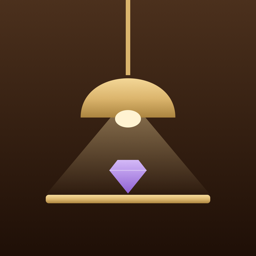

Cabinette
Support
Cabinette is a private catalog for the things you collect, on iPhone and iPad. No account, no cloud, no subscription.
Questions, ideas or a problem? Write to cabinette.support@icloud.com. Please include your device and iOS version.
Good to know
- Backups: Settings › Backup › Back Up All Collections saves one file you can keep in Files or iCloud Drive. Restoring adds collections back and never deletes anything.
- Restoring a purchase: Settings › Premium › Restore Purchases.
- Moving to a new device: back up on the old one, open the file on the new one.
- Your data stays on your device. See the privacy policy.
Destek
Cabinette, iPhone ve iPad için biriktirdiğin şeylere özel bir katalog. Hesap yok, bulut yok, abonelik yok.
Soru, fikir ya da bir sorun mu var? cabinette.support@icloud.com adresine yaz. Lütfen cihazını ve iOS sürümünü de ekle.
Bilmekte fayda var
- Yedekleme: Ayarlar › Yedek › Tüm koleksiyonları yedekle, Dosyalar'da ya da iCloud Drive'da saklayabileceğin tek bir dosya oluşturur. Geri yükleme koleksiyonları ekler, hiçbir şeyi silmez.
- Satın almayı geri yükleme: Ayarlar › Premium › Satın alımları geri yükle.
- Yeni cihaza geçiş: eski cihazda yedekle, dosyayı yeni cihazda aç.
- Verilerin cihazında kalır. Gizlilik politikasına bak.
Support
Cabinette ist ein privater Katalog für alles, was du sammelst, auf iPhone und iPad. Kein Konto, keine Cloud, kein Abo.
Fragen, Ideen oder ein Problem? Schreib an cabinette.support@icloud.com und nenne bitte dein Gerät und deine iOS-Version.
Gut zu wissen
- Backups: Einstellungen › Backup › Alle Sammlungen sichern speichert eine Datei, die du in „Dateien“ oder iCloud Drive aufbewahren kannst. Beim Wiederherstellen werden Sammlungen hinzugefügt, nie gelöscht.
- Kauf wiederherstellen: Einstellungen › Premium › Käufe wiederherstellen.
- Neues Gerät: auf dem alten sichern, die Datei auf dem neuen öffnen.
- Deine Daten bleiben auf deinem Gerät. Siehe Datenschutzerklärung.